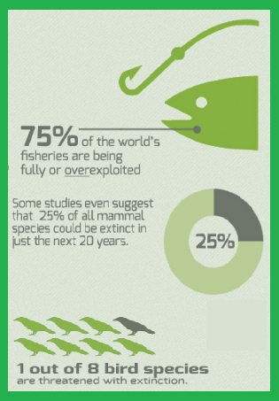
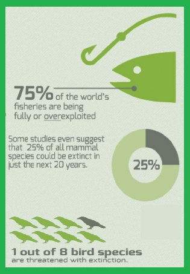
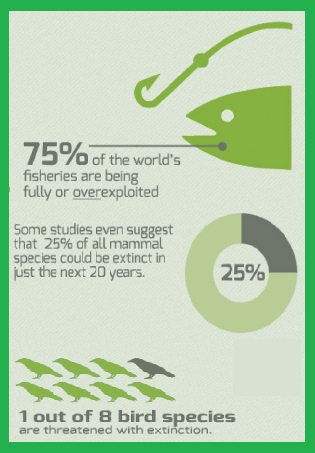
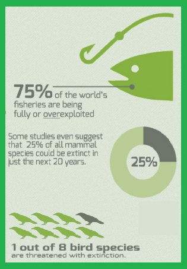

Process
2. Readers must click all the links (Species diversity and Hierarchical Taxonomic system of classification of living things) and read the article presented in each link. They also need to take down notes of some important details in the articles.
Species diversity link:
http://study.com/academy/lesson/what-is-species-diversity-definition-importance-examples.html
http://www.wwf.org.au/our_work/saving_the_natural_world/what_is_biodiversity/
species_diversity
Hierarchical Taxonomic system of classification of living things link:
https://www.boundless.com/biology/textbooks/boundless-biology-textbook/phylogenies-and-the-history-of-life-20/organizing-life-on-earth-133/the-levels-of-classification-541-11750/
http://anthro.palomar.edu/animal/table_humans.htm
3. Writers are going to use the notes made by the (2) Readers to make a composition (draft) out of the information given in those notes.
4. Editor must read the composition and make a revision if necessary. The written report must be examine thoroughly based on the guidelines in the RUBRIC before submitting it to the DENR Gmail account: secretaryofdenroffice1@gmail.com for evaluation.
Task 2: PowerPoint Presentation
1. In making a PowerPoint presentation, each member in the group is assigned to a certain role (See Table 2).
Table 2. List of roles to be assigned by each member of the group in making a PowerPoint presentation.
2. Readers must click all the links and read the article presented in each link. Another task is to take down notes of some important details in every article they are going to read.
Effects of Biodiversity loss link:
http://www.tropical-rainforest-animals.com/biodiversity-loss.html#lossextinct
Students can do to protect biodiversity link:
http://www.priweb.org/globalchange/bioloss/bl_06.html
http://www.naturetrust.bc.ca/land-conservation/biodiversity/what-can-we-do/
http://www.endangered.org/10-easy-things-you-can-do-to-save-endangered-species/
3 interesting facts about the species link:
https://www.buzzfeed.com/kasiagalazka/surprising-facts-about-animals?utm_term=.xkBd1QQBb#.mmOY0oojx
http://www.thefactsite.com/2010/09/300-random-animal-facts.html
3. Scriptwriter should scan all the notes made by the reader. He/she must create a script of the video based on the information present in the notes.
4. Anchor is responsible for delivering the content of the video while the Camera man is for handling/controlling the camera facing to the anchor/scenarios included in the video presentation.
5. Camera man is tasked to edit the video and give it to the Director.
The Director is responsible for planning or directing a scenario in the video based on the script made by the Scriptwriter. He/she must be guided by the RUBRICS for making a documentary video for final revision before submitting the video to this Gmail account: secretaryofdenroffice1@gmail.com (using google drive), for evaluation.
The (3) outputs is subjected for evaluation by the DENR evaluators based on the following rubrics provided in the EVALUATION PAGE. Oral presentation rubric for the PowerPoint presentation is included also in this page. Therefore, it is expected to have video presentation and oral reporting (using the PowerPoint) after all the three outputs is done. Later on, after the evaluation is completed, the secretary of DENR is going to announce the group which has the best submissions and will be the new five ambassadors of the Philippines for environmental welfare.
2. Readers must click all the links and read the article presented in each link. They are going to take down notes of some important information that can be found in the articles after reading it.
Protection and conservation of endangered species link:
https://www.nwf.org/What-We-Do/Protect-Wildlife/Endangered-Species.aspx
http://www.endangered.org/campaigns/protecting-the-endangered-species-act/
http://www.bbc.com/earth/story/20150715-why-save-an-endangered-species
Organizations that support Biodiversity awareness link:
http://www.goodnet.org/articles/512
Biodiversity protection local and international laws link:
https://www.environment.gov.au/epbc/about
http://mwwphilippines.org/2013/08/06/philippine-and-international-laws-on-marine-wildlife-protection/
http://www.lawphil.net/statutes/repacts/ra2001/ra_9147_2001.html
List of Endangered plants and animals and their causes of extinction link:
http://science.jrank.org/pages/2467/Endangered-Species.html
Photographs of endangered animals in different countries link:
http://list25.com/25-most-endangered-species-on-earth/
3. Writers are going to use the notes made by the (2) Readers and decide what valuable information to be included in the every PowerPoint slides. They must create a content layout of their PowerPoint presentation.
4. The PowerPoint Expert will make a PowerPoint presentation using the content layout by the (2) Writers. He/she must have seen the Rubrics for creating a PowerPoint slides (serve as guide) and his/her final output should be submitted in this Gmail account: secretaryofdenroffice1@gmail.com for evaluation.
Task 3: Documentary Video
1. In creating a documentary video, each member in the group is assigned to a certain role (See Table 3).
Table 3. List of roles to be assigned by each member of the group in making a documentary video
The main goal in this activity is to explore Biodiversity and to have a background knowledge about animals and plants current situation. This learning will serve as the power (Knowledge) in persuading other people to take some action and to give them awareness of what’s happening in our environment. By realizing this goal, having connection with people or organization would be relevant in such a way that they are willing to help achieving the main goal of exploring wildlife on earth. DENR is one of a government institution that has history of taking care of the environment for many years.
This year, they are going to give chances to those aspiring advocates to become young ambassadors in the future. The DENR needs five individuals to be an ambassadors in the Philippines for Environmental welfare. They required a submission of a written report, PowerPoint presentation, and a documentary video that would serve as their basis of choosing five ambassadors.
Below, are steps to be followed by the aspiring group of (5) students. Each group members should possess high determination and willingness to do the three tasks required by the DENR. Collaboration and proper management must be present within the group so that all the tasks given would be completed within 3 days.
Task 1: Written Report
1. In making a written report, each member in the group is assigned to a certain role (See Table 1).
Table 1. List of roles to be assigned by each member of the group in making a written report


 


 
